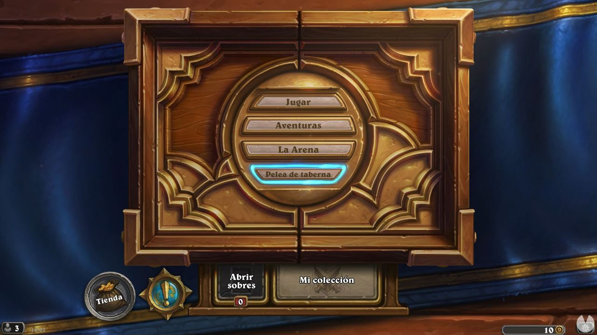
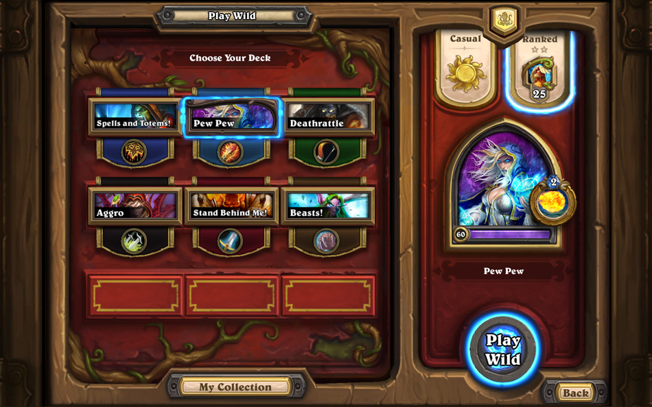
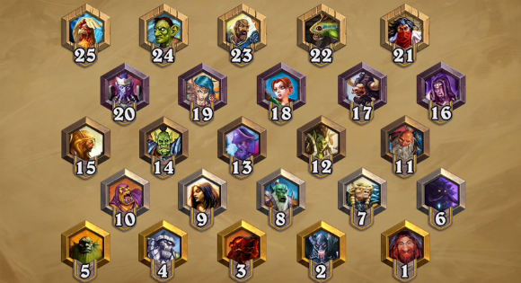
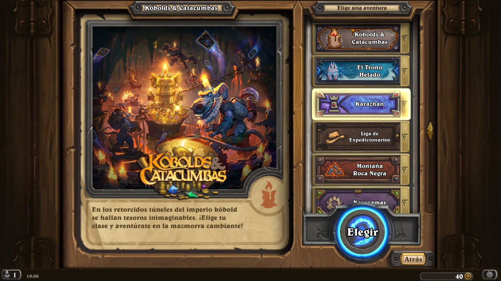
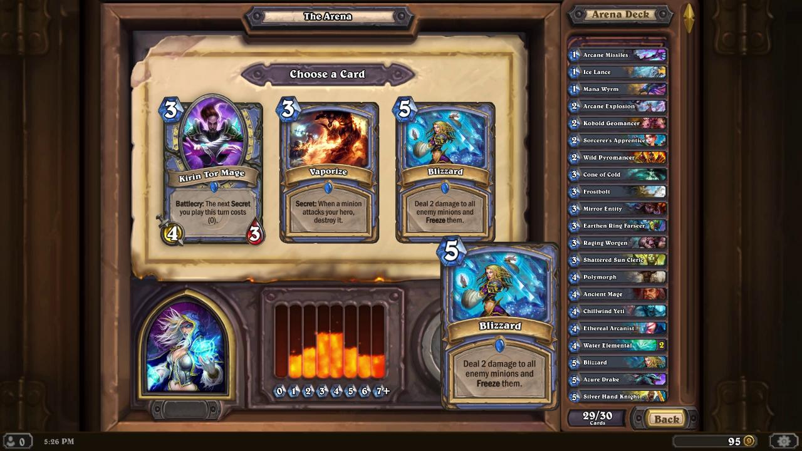
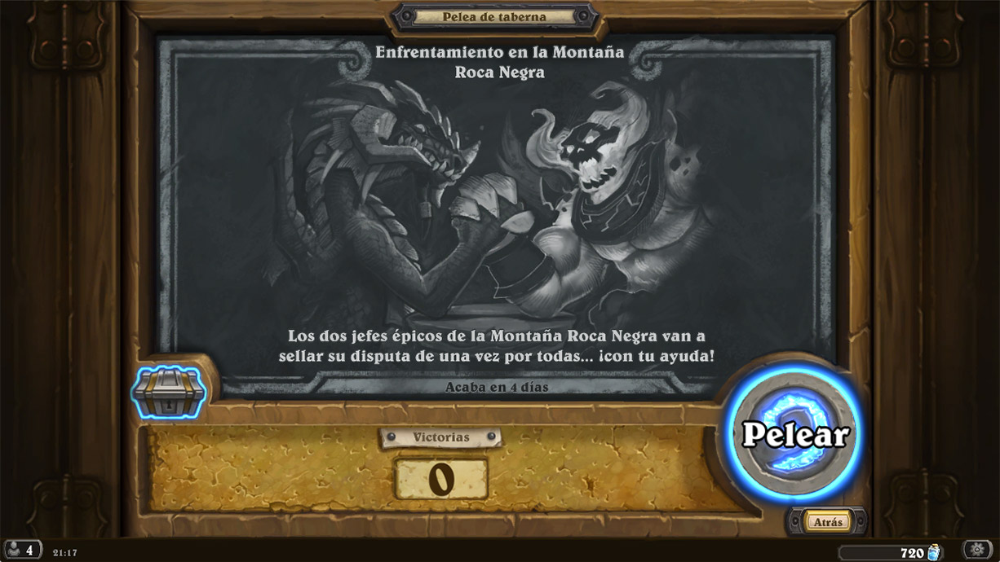

Modos de juego
Modos de juego

En hearthStone existen 4 modos de juego, cada uno con sus diferencias, que pasaremos a detallarte a continuación:
 Jugar
Jugar

Este es el modo principal de Hearthstone, donde podremos buscar rivales aleatorios para echarnos una partida contra ellos. Eso sí, aquí hay que tener en cuenta que existen diferentes variantes, ya que podremos jugar partidas de Aficionado (sin puntuar) y con rango, donde nuestras victorias y derrotas nos harán subir o bajar puestos en la clasificación general de cada temporada. Al final de la misma, obtendremos una recompensa u otra según el rango que alcancemos.
 ¿Jugar en Estandar o en salvaje?
¿Jugar en Estandar o en salvaje?
Otra variante importantísima radica en si queremos jugar una partida Estándar o Salvaje.
Estándar: Solo podremos usar las cartas básicas y clásicas, así como las de las expansiones lanzadas en los dos últimos años, algo que limita un poco más la creación de mazos y el metajuego para mantenerlo siempre actualizado. Sin embargo es un modo perfecto para empezar, ya que la cantidad de información que tendremos que aprender es mucho menor.
Salvaje: Tendremos acceso a todos los naipes del título, de todas las expansiones, por lo que será más difícil para nuevos jugadores y el modo más competitivo.
Listado de raclasificaciones y grandos:

Tened en cuenta que las clasificaciones y rangos son completamente independientes en Estándar y Salvaje, por lo que tendréis que subir puestos en cada una de estas modalidades de forma individual.
Aventura

Aquí nos encontramos con el modo para un jugador del juego o PvE. Por un lado tenemos Práctica, donde podremos jugar contra la IA en Normal y Experto para subir el nivel de nuestros héroes y desbloquear cartas adicionales, probar nuestros mazos y desbloquear nuevas clases de personajes.
Por otra parte, tenemos las Aventuras, pequeñas campañas donde recorreremos algunas de las mazmorras más míticas de World of Warcraft enfrentándonos a sus diferentes jefes, quienes presentan unos combates únicos y con mecánicas exclusivas a las que nos tendremos que adaptar para derrotarlos. Al salir victoriosos podremos pasar a la siguiente batalla y obtener nuevas cartas.
Todas ellas cuentan con una versión Heroica con una dificultad mucho mayor, así como con desafíos exclusivos de clase con los que obtener nuevas cartas. Eso sí, las Aventuras no son gratis, por lo que tendréis que ahorrar el oro necesario (o pagar con dinero real) para desbloquearlas y acceder a cada una de sus diferentes alas.
Por lo general suelen merecer mucho la pena, ya que las cartas que podemos conseguir en ellas no se pueden obtener en sobres y, además, completarlas suele ser una tarea muy divertida y entretenida.
La Arena

Esta es una modalidad bastante especial, ya que para jugar en ella tenemos que pagar una entrada de 150 monedas de oro o 1,99 euros en su defecto. Una vez hayamos pagado la cuota, nos irán apareciendo cartas de forma aleatoria con las que tendremos que apañárnoslas para construir un mazo lo más eficaz y potente posible.
Como podéis imaginar, este mazo será el que utilizaremos para jugar contra otros usuarios, por lo que no podremos hacer uso de los que hayamos creado. Nuestro objetivo aquí no es otro que el de intentar ganar 12 partidas sin perder tres entre medias. Si llegamos a este número de derrotas, seremos eliminados automáticamente.
De esta forma, dependiendo de nuestro número de victorias total (cuanto más alto mejor) obtendremos más o menos recompensas, las cuales pueden incluir cosas como sobres o polvos arcanos que posteriormente podemos utilizar para crear nuevos mazos.
La Pelea de la taberna

Aquí encontraremos un modo único cada semana, el cual suele alterar de muchas formas distintas las reglas del juego para plantearnos partidas muy diferentes a lo que estamos acostumbrados a jugar. Aunque suelen variar, a veces también se repiten a lo largo del año y siempre encontraremos aquí un divertimento alternativo al modo Jugar. Eso sí, no podréis acceder a estos modos hasta que hayáis subido al menos un héroe a nivel 20.
Tienda, Misiones, Abrir sobres y Mi Colección
Debajo de los modos de juego nos encontraremos una serie de botones con ciertas funciones o herramientas básicas del juego que vamos a enumerar y a describir de forma breve a continuación:
- Tienda: Lugar en el que podremos comprar sobres para engordar nuestro mazo, aventuras o héroes ya sea con la moneda del juego o con dinero real.
- Misiones: Lugar en el que podremos ver algunas de nuestras estadísticas como jugadores y las misiones diarias que, si las cumplimos, nos permitirán obtener dinero del juego para gastar en la Tienda o en la Arena.
- Abrir Sobres: Lugar en el que abriremos los sobres que hayamos ganado en nuestras paridas de Hearthstne o que hayamos adquirido en la Tienda. Cada uno de estos sobres contienen cartas aleatorias.
- Mi colección: El "taller" de la taberna. En este lugar podremos inspeccionar todas las cartas que tenemos en nuestro poder así como crear otras nuevas para ampliar nuestra colección. También nos servirá para consultar nuestros diferentes mazos y personalizarnos según nuestros gustos y estilo de juego.

Copyright © 2017 Proyecto HTML de la asignatura Aplicaciones web.2ºSMX